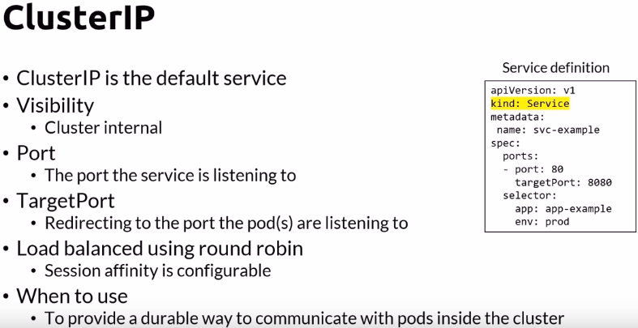

The ClusterIP service type
ClusterIP services expose pods to internal network traffic. For example, you may expose a database to other pods via a ClusterIP service because external clients should never have direct access to the database.
ClusterIP services expose the smallest surface area and should be used for pods that only need to be exposed to other pods in the cluster.
